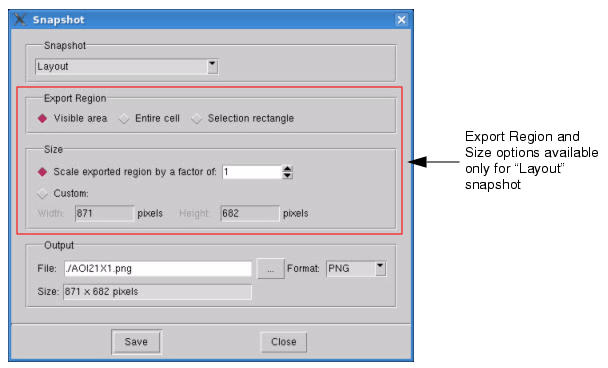

Once you have
established your view settings, you can take a screenshot of the
current view and export it to a viewable graphics file for future review.
Procedure
- Choose to
display the Snapshot dialog box.
The default snapshot for exporting
is Layout, which presents additional export options.
Figure 1. Snapshot Dialog Box
- In the Snapshot dropdown list,
select the layout item(s) you would like to export. Options include
Layout, Layout in view, Layout + Legend, Layer Palette, and Toplevel
window.
- Specify the output filename
and select the output format. Output format options include:
PNG — Portable Network
Graphics is both a lossy and lossless compression format which supports
8-bit paletted images and 24-bit color images.
JPG — Joint Photographic
Experts Group is a lossy compression format which supports 8-bit
grayscale images and 24-bit color images.
GIF — Graphics Interchange
Format is a lossless compression format limited to an 8-bit palette,
or 256 colors.
BMP — Windows bitmap file
format is an uncompressed format.
XPM — X Pixmap is a bitmap
format.
PPM — Portable Pixmap
file format is a bitmap format.
TIFF — Tagged Image File
Format is both a lossy and lossless compression format which supports
8-bit or 16-bit per color (red, green, blue) images.
- Click Save to
save the screenshot to the specified file in the specified format.